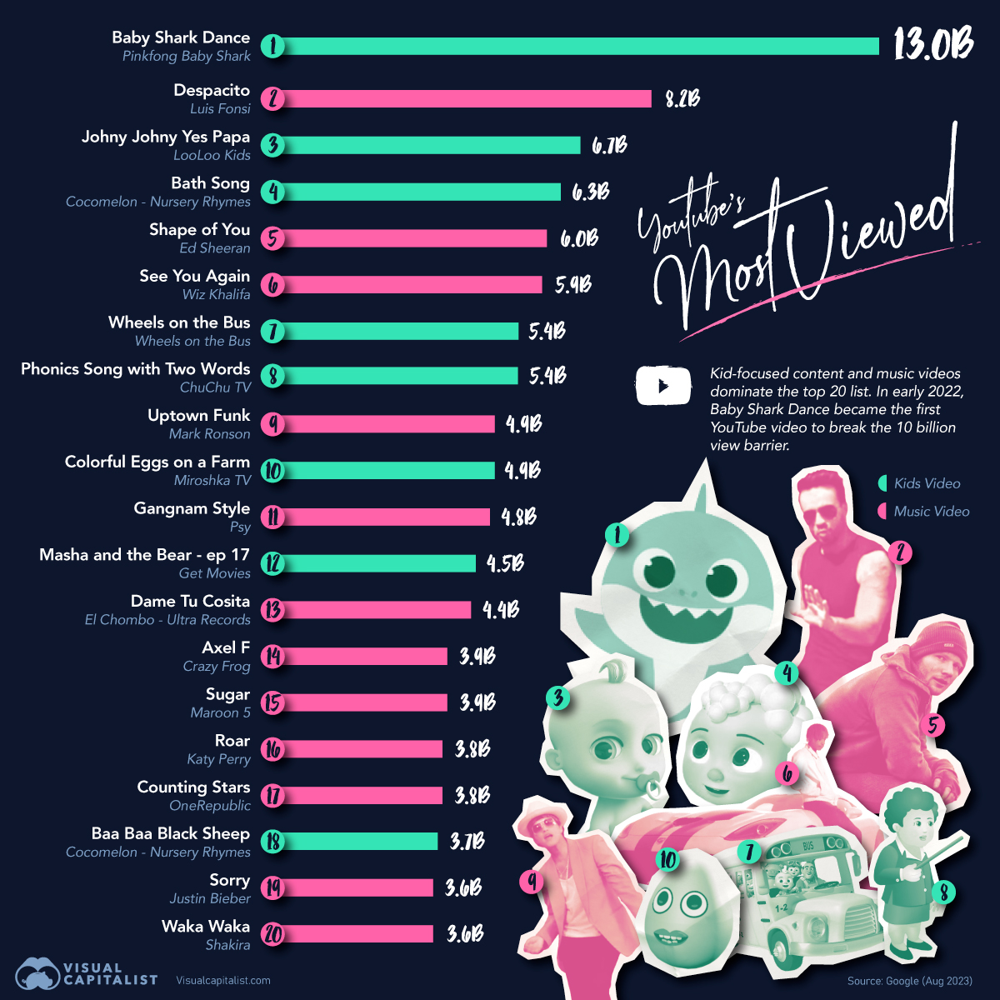

Your browser doesn't support the features required by impress.js,
so you are presented with a simplified version of this presentation.
For the best experience please use the latest Chrome,
Safari or Firefox browser.
بسم الله الرحمن الرحیم
تقدیم به ساحت مقدس حضرت صدیقۀ طاهره زهرایِ مرضیه سلام الله علیها
داستان اپن سورس
اصالت مدرک یا تایید علم توسط مردم
کار برای قــــلههای قــــدرت و ثــــروت یا خـــــــــدمت به خلـــــــــق
مدیریت توسط بروکراسی یا عقل خـــــدا
معاش با حقوق دولتی یا کمک مردم
شباهت با شکوفایی تمدن اسلامی
راه حل چیست؟
داستان لســــــان
ویدیوهای پربازدید یوتیوب

۲- رابطهی واقعی وجود نداشت :
- روابط به اندازه کافی مستحکم نبودند و با جزئیات خودشون رو توصیف نمیکردند
- دو طرف رابطه همدیگه رو به طور کامل دربرنگرفته بودند
- اگر یک طرف رابطه تغییر میکرد طرف دیگه هیچ واکشنی نداشت
- اگر مشخصهای تغییرات زیادی داشت فرایندی که منجر به تولد رابطهی جدید بشه وجود نداشت
- اگر یک طرف رابطه از بین میرفت معلوم نبود تاثیرات چقدر و چگونه است
- و مهمترین نکته این بود که معلوم نبود یک طرف رابطه دقیقا چه تاثیری بر طرف دیگه میگذاره
3- Modern GraphQL
- بدون نیاز به افزودن زبان جدیدی مانند GQL برای توصیف درخواستها و پردازشگرهایی برای درک GQL، چه در سمت فرانت
چه در سمت بکاند
- تعیین میزان نفوذ در رابطهها به صورت مشخص و جداگانه برای هر endpoint بدون امکان دور خوردن
- توصیف دادهها از سمت فرانت، درست بر اساس تعریف دیتابیس از توصیف داده (پروجکشن بر مبنای صفر یا یک در
مونگودیبی)
- دریافت دادههای رابطهای بدون با یک کوئری از دیتابیس
- سرعت بالا چه در سمت بکاند چه در سمت فرانتاند
- تایپسیفتی هم در رانتام هم در دولوپمنتتایم